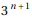
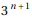

東京大学 2004年 理科 第4問
問題
関数を次のように定める。
以下同様に、n≥3に対して関数が定まったならば、関数 をで定める。このとき、以下の問いに答えよ。
をで定める。このとき、以下の問いに答えよ。
(1) aを実数とする。 を満たす実数xの個数を求めよ。
を満たす実数xの個数を求めよ。
(2) aを実数とする。を満たす実数xの個数を求めよ。
(3) nを3以上の実数とする。を満たす実数xの個数はであることを示せ。
解答
(1)
はxについて3次関数なので、最大3個の実数解を持つ。
が１個以上の実数解を持つ条件は
 が2個以上の相異なる実数解を持つ条件は
が2個以上の相異なる実数解を持つ条件は
 が3個以上の相異なる実数解を持つ条件は
が3個以上の相異なる実数解を持つ条件は
以上をまとめて、求める実数xの個数は
-2<a<2のとき3個
a=±2のとき2個
a<-2||2<aのとき1個
(2)
 は9次式なのでは最大9個の実数解を持つ。
は9次式なのでは最大9個の実数解を持つ。
(1)と同様に、1から9個以上の相異なる実数解を持つ条件を計算すると、
| 1 | True |
| 2 | -2≤a≤2 |
| 3 | -2≤a≤2 |
| 4 | -2≤a≤2 |
| 5 | -2≤a≤2 |
| 6 | -2<a<2 |
| 7 | -2<a<2 |
| 8 | -2<a<2 |
| 9 | -2<a<2 |
従って、求める実数xの個数は
-2<a<2のとき9個
a=±2のとき5個
a<-2||2<aのとき1個
(3)
(i) n=1のとき
のグラフは下図。
-2<a<2としての解の存在範囲を調べると
だから
-2<x<-1の範囲に1個
-1<x<1の範囲に1個
1<x<2の範囲に1個
であり、-2<x<2の範囲に異なる3個が存在する。
特にの解は の3個である。
の3個である。
(ii) n=k(k≥1)のときの-2<x<2の範囲に相異なる実数解が 個存在すると仮定する。
個存在すると仮定する。
の解は
の3本の方程式の解となる。仮定からこの3本の方程式は各々-2<x<2の範囲に相異なる 個の実数解を持つから、
個の実数解を持つから、 の解は-2<x<2の範囲に個の実数解を持つ。
の解は-2<x<2の範囲に個の実数解を持つ。
(i) (ii)より、すべての自然数nについて の実数解の個数はである。
の実数解の個数はである。
補足・感想
解の個数に関する問題はMathematicaでの記述が難しいが、(1)(2)は無理やり記述した。
(3)は増減表を書くのを省略したくらいでほとんど人間が書く解答と同じ。